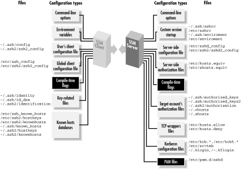

|  |
Chapter 4. Installation and Compile-Time Configuration
Contents:
SSH1 and SSH2F-Secure SSH Server
OpenSSH
Software Inventory
Replacing R-Commands with SSH
Summary
- SSH1 and SSH Secure Shell (SSH2)
- Products from SSH Communications Security, Ltd., that implement the SSH-1 and SSH-2 protocols, respectively.
- F-Secure SSH Server
- F-Secure Corporation's versions of SSH1 and SSH2.
- OpenSSH
- A free offshoot of SSH1 with independently implemented support for the SSH-2 protocol; part of OpenBSD.
4.1. SSH1 and SSH2
SSH1 and SSH2 (a.k.a SSH Secure Shell) were written for Unix and have been ported to several other operating systems. Both products are distributed as source code that must be compiled before use, although precompiled executables for various platforms are also available. SSH1 and SSH2 may be distributed without cost for noncommercial use. If you plan to use either for commercial purposes, then according to the license, you must purchase the software. Commercial versions are sold by SSH Communication Security, Ltd., and F-Secure Corporation, and we'll be discussing these later. The precise terms for copying and using each version are spelled out in a file called COPYING (for SSH1) or LICENSING (for SSH2). Be sure to read and understand the terms before using the software. Also, because these products involve cryptography, your local laws may dictate whether you may use or distribute the software.4.1.1. Features
SSH1 and SSH2 define the de facto standard for SSH features and have tremendous flexibility and power. Both products include:- Client programs for remote logins, remote command execution, and secure file copying across a network, all with many runtime options
- A highly configurable SSH server
- Command-line interfaces for all programs, facilitating scripting with standard Unix tools (shells, Perl, etc.)
- Numerous, selectable encryption algorithms and authentication mechanisms
- An SSH agent, which caches keys for ease of use
- Support for SOCKS proxies
- Support for TCP port forwarding and X11 forwarding
History and logging features to aid in debugging
4.1.2. Obtaining the Distribution
SSH1 and SSH2 are available by anonymous FTP from ftp://ftp.ssh.com in the directory /pub/ssh, or equivalently from the URL:ftp://ftp.ssh.com/pub/ssh/You may reach this repository from the web site of SSH Communications Security:
http://www.ssh.com/
4.1.2.1. Extracting the files
Distributions are packaged in gzipped tar format. To extract the files, apply gunzip followed by tar. For example, to extract SSH1 Version 1.2.27 from the gzipped tar file ssh-1.2.27.tar.gz, type:Alternatively, use a single command with a pipe:$ gunzip ssh-1.2.27.tar.gz $ tar xvf ssh-1.2.27.tar
Or, if you have GNU Tar (called gtar or tar on some systems), simply type:$ gunzip < ssh-1.2.27.tar.gz | tar xvf -
The result is a new subdirectory containing all files in the distribution.$ gtar xzvf ssh-1.2.27.tar.gz
4.1.2.2. Verifying with PGP
Along with each SSH1 and SSH2 distribution is a PGP signature file for Pretty Good Privacy that guarantees the distribution is genuine and has not been modified. [Section 1.6.2, "Pretty Good Privacy (PGP)"] The file ssh-1.2.27.tar.gz, for example, is accompanied by ssh-1.2.27.tar.gz.sig containing the PGP signature. To verify the file is genuine, you need PGP installed. Then:- If you have not done so previously, obtain the PGP public keys for
the distributions. Separate keys are used for verifying SSH1 and
SSH2:
ftp://ftp.ssh.com/pub/ssh/SSH1-DISTRIBUTION-KEY-RSA.asc ftp://ftp.ssh.com/pub/ssh/SSH2-DISTRIBUTION-KEY-RSA.asc ftp://ftp.ssh.com/pub/ssh/SSH2-DISTRIBUTION-KEY-DSA.asc
Add them to your PGP key ring by saving each one to a temporary file and typing:$ pgp -ka temporary_file_name
- Download both the distribution file (e.g., ssh-1.2.27.tar.gz) and the signature file (e.g., ssh-1.2.27.tar.gz.sig).
- Verify the signature with the command:
If no warning messages are produced, the distribution file is genuine.$ pgp ssh-1.2.27.tar.gz
4.1.3. Building and Installing SSH1
Generally, SSH1 is compiled and installed by the following steps. You should read any README, INSTALL, etc., documents in the distribution to see if there are any particular known problems or extras steps for installation in your environment.- Run the supplied configure script. [Section 4.1.5, "Compile-Time Configuration"] To accept all defaults, change the directory
to the root of the SSH1 distribution and type:
$ ./configure
- Compile everything:
$ make
- Install everything. You need root privileges if you plan to install
files in system directories:
The following files are installed:$ su root Password: ******** # make install
- The server program, sshd1, and a link to it called sshd
- The clients ssh1 and scp1, and respective links called ssh and scp
- The symbolic link slogin1, pointing to ssh1, and likewise a link called slogin pointing to slogin1
- Support programs ssh-add1, ssh-agent1, ssh-askpass1, ssh-keygen1, and links to them called ssh-add, ssh-agent, ssh-askpass, and ssh-keygen, respectively
- The support program make-ssh-known-hosts
- A newly generated host key pair, created by ssh-keygen and placed by default into /etc/ssh_host_key (private key) and /etc/ssh_host_key.pub (public key)
- The server configuration file, /etc/sshd_config by default [Section 5.3.1, "Server Configuration Files"]
- The client configuration file, /etc/ssh_config by default [Section 7.1.3, "Client Configuration Files"]
- Manpages for the various programs
- Create the known hosts file. [Section 4.1.6, "Creating the Serverwide Known-Hosts File"]
4.1.4. Building and Installing SSH2
SSH2 is compiled and installed much like SSH1, using the configure script and a pair of make commands:- Perform compile-time configuration as with SSH1. [Section 4.1.5, "Compile-Time Configuration"] To accept all defaults, simply change
directory to the root of the SSH2 distribution and type:
$ ./configure
- Compile everything:
$ make
- Install everything, remembering to become root if you are installing
files in system directories:
The following files are installed:$ su root Password: ******** # make install
- The server programs sshd2, and a link to it called sshd
- The secure FTP server program sftp-server
- The clients ssh2, scp2, and sftp2, and links to them called ssh, scp, and sftp, respectively
- Support programs ssh-add2, ssh-agent2, ssh-askpass2, ssh-keygen2, ssh-probe2, and ssh-signer2, and links to them called ssh-add, ssh-agent, ssh-askpass, ssh-keygen, ssh-probe, and ssh-signer, respectively
- Additional support programs ssh-dummy-shell and ssh-pubkeymgr
- A newly generated host key pair, created by ssh-keygen2 and placed by default into /etc/ssh2/hostkey (private key) and /etc/ssh2/hostkey.pub (public key)
- The server configuration file, /etc/ssh2/sshd2_config by default [Section 5.3.1, "Server Configuration Files"]
- The client configuration file, /etc/ssh2/ssh2_config by default [Section 7.1.3, "Client Configuration Files"]
- Manpages for the various programs
4.1.4.1. SSH1 and SSH2 on the same machine
Notice that SSH1 and SSH2, when installed, create some files with the same names, such as the link sshd. What happens if you install both SSH1 and SSH2 on the same machine? Happily, everything works out, even if you install them into the same bin and etc directories, provided you install the most recent versions. Each of their Makefiles is constructed to check for the existence of the other version and respond appropriately. Specifically, both SSH1 and SSH2 create symbolic links called sshd, ssh, scp, ssh-add, ssh-agent, ssh-askpass, and ssh-keygen. If you install SSH1 and then SSH2, the SSH2 Makefile renames these files by appending the suffix .old and then creates new symbolic links pointing to its own SSH2 programs. For instance, ssh originally points to ssh1; after installing SSH2, ssh points to ssh2, and ssh.old points to ssh1. This is appropriate since SSH2 is considered a later version than SSH1. On the other hand, if you install SSH2 and then SSH1, the SSH1 Makefile leaves SSH2's links untouched. As a result, ssh remains pointing to ssh2, and no link points to ssh1. This is consistent with the practice of installing SSH1 to allow SSH2 to provide fallback SSH1 support.4.1.5. Compile-Time Configuration
Building SSH1 and SSH2 seems pretty simple, eh? Just type configure and a few make commands, and you're done. Well, not so fast. When building and installing a new security product, you shouldn't blindly accept its defaults. These SSH products have dozens of options that may be set at compile-time, and you should carefully consider each one. We call this process compile-time configuration. Compile-time configuration is performed by running a script, called configure, just before compiling the distribution.[46] Roughly speaking, configure accomplishes two tasks:[46]The configure script is generated by a Free Software Foundation package called autoconf. You don't need to know this to compile SSH1 or SSH2, but if you're interested in learning more about autoconf, visit the GNU web site at http://www.gnu.org/.
- It examines the local computer, setting various computer-specific and operating system-specific options. For example, configure notices which header files and libraries are available and whether your C compiler is ANSI or not.
- It includes or excludes certain features found in the SSH source code. For example, configure can keep or remove support for Kerberos authentication.
and also read the files README and INSTALL in the root of the distribution. Incidentally, the behavior of SSH1 and SSH2 may be controlled at three levels. The first is compile-time configuration as discussed in this chapter. In addition, server-wide configuration (Chapter 5, "Serverwide Configuration") controls global settings for a running SSH server, and per-account configuration (Chapter 8, "Per-Account Server Configuration") controls settings for each user account accepting SSH connections. Figure 4-1 illustrates where compile-time configuration fits into the whole spectrum. We'll remind you of this picture each time we introduce a new type of configuration.$ configure --help

Figure 4-1. SSH compile-time configuration (highlighted parts)
4.1.5.1. Configuration standards
The configure script accepts command-line flags, each beginning with a double dash ( -- ), to control its actions. Flags are of two types:- With/without flags
- Include a package during compilation. These flags begin with -- with or -- without. For example, support for the X Window System may be included using the flag -- with-x or omitted using -- without-x.
- Enable/disable flags
- Set the default behavior of SSH1. These flags begin with -- enable or -- disable. For example, the X forwarding feature in SSH2 is enabled by the flag -- enable-X11-for warding or disabled with -- disable-X11-forwarding . Some of these defaults may be overridden later by serverwide or per-account configuration.
Various string values are used, but the most common are yes and no. For a given package P, the flags -- with-P and -- with-P= yes are equivalent. The following tables illustrate the relationships:-- with-etcdir=/usr/local/etc -- enable-X11-forwarding=no
| If you write: | It's equivalent to: |
|---|---|
| -- with-P=yes | -- with-P |
| -- with-P=no |
-- without-P |
This next table shows the relationships for a given feature F :
| If you write: | It's equivalent to: |
|---|---|
-- enable-F=yes |
-- enable-F |
-- enable-F=no |
-- disable-F |
In the sections that follow, we show many examples of configure with different command-line flags. Most examples demonstrate only one flag at a time, so we use ellipses like this:
to indicate other flags might be present on the command line. The proper way to run configure is just once, before compilation, with all desired flags on the same command line.$ configure ... --enable-fancy-feature ...
WARNING: Be careful when choosing configure flags, or you might waste a lot of time. The configure script is not very smart, performing little or no sanity checking on its input. If you provide an invalid flag, configure can naively run for several minutes, handling a hundred other configuration options, before finally reaching the bad flag and dying. Now you have to run the script all over again. Also, don't depend on flags' default values since they might differ among SSH implementations. For maximum security and control, specify all flags explicitly when running configure.
4.1.5.2. Installation, files, and directories
Let's begin our discussion of configure 's SSH-related flags. First, we discuss file-related flags for choosing installation directories, turning setuid bits on and off, and permitting files and directories to be group writable. The SSH executables are installed in a directory of your choosing -- /usr/local by default -- within a subdirectory called bin. This is specified with the configure flag -- prefix. For example, to place the bin directory in /usr/local/ssh and install the executables in /usr/local/ssh/bin:Some SSH-related system files are installed in the directory /etc. This default location can be overridden with the configure flag -- with-etcdir, supplying an alternative directory name (for OpenSSH, this is --sysconfdir):# SSH1, SSH2, OpenSSH $ configure ... --prefix=/usr/local/ssh ...
The flag -- with-etcdiris unique among flags because there is no corresponding -- without-etcdir flag. SSH1 and SSH2 must have installation directories or their Makefiles will refuse to compile the software. Next, certain executables are installed as setuid root by default: ssh1 (for SSH1) and ssh-signer2 (for SSH2). ssh1 needs to be setuid root for trusted-host authentication (i.e., host-based authentication of various kinds), for the following reasons:# SSH1, SSH2 $ configure ... --with-etcdir=/usr/local/etc ...
- To access the local host key, which is readable only by root
- To allocate a privileged port, which only root can do
Similarly, the setuid bit of ssh-signer2 for SSH2 is controlled by -- enable-suid-ssh-signerand -- disable-suid-ssh-signer; for example:# SSH1 only $ configure ... --disable-suid-ssh ...
Finally, the SSH server requires certain permissions on files and directories in user accounts, such as the .rhosts file and the authorized_keys file.[47] In particular, group write and world write permissions are forbidden. Group write permission may be useful for shared accounts (so members of a group can conveniently modify the account's SSH files). This restriction may be relaxed using the -- enable-group-writeability configure flag:[48]# SSH2 only $ configure ... --disable-suid-ssh-signer ...
[47]Only if StrictModes is turned on in the server. [Section 5.4.2.1, "Acceptable permissions for user files"]
[48]Yes, "writeability" is correct, even though it's a misspelling.
Now the server permits SSH connections to accounts with group-writable SSH files.# SSH1, SSH2 $ configure ... --enable-group-writeability ...
4.1.5.3. TCP/IP support
Most TCP/IP features of SSH1 and SSH2 are controlled by serverwide configuration [Section 5.4.3, "TCP/IP Settings"], but a few are available through compile-time configuration. These include the TCP NODELAY feature, TCP-wrappers, the SO_LINGER socket option, and a limit on the maximum number of connections. If you plan to operate SSH over a wide-area network as opposed to a speedy Ethernet connection, you might consider disabling TCP/IP's NODELAY feature, a.k.a the Nagle Algorithm, for SSH connections. The Nagle Algorithm reduces the number of TCP segments sent with very small amounts of data, such as the small byte sequences of a terminal session. You may disable it at compile time with the -- disable-tcp-nodelay flag:Alternatively, you may enable or disable it during serverwide configuration using the NoDelay configuration keyword. [Section 5.4.3.8, "Controlling TCP_NODELAY"] TCP-wrappers is a security feature for applying access control to incoming TCP connections based on their source address. [Section 9.4, "Forwarding Security: TCP-wrappers and libwrap"] For example, TCP-wrappers can verify the identity of a connecting host by performing DNS lookups, or it can reject connections from given addresses, address ranges, or DNS domains. Although SSH already includes some of this kind of control with features such as AllowHosts, DenyHosts, etc., TCP-wrappers is more complete. It allows some controls not currently implemented in any SSH version, such as restricting the source of forwarded X connections. SSH1 and SSH2 both include support for TCP-wrappers if the flag -- with-libwrap is given at compile time, providing the path to the wrapper library, libwrap.a :# SSH1, SSH2 $ configure ... --disable-tcp-nodelay ...
If your Unix installation doesn't include the TCP-wrappers library, you can retrieve and compile it yourself from:# SSH1, SSH2 $ configure ... --with-libwrap=/usr/local/lib ...
ftp://ftp.porcupine.org/pub/security/index.htmlFor more information on TCP-wrappers, read the manpages for tcpd and hosts_access. A rather low-level option for SSH1 concerns the SO_LINGER socket flag, which may be turned on or off at compile time. Suppose SSH1 is communicating via an open socket, but the socket gets closed while data is still queued. What happens to the data? The setting of the SO_LINGER flag determines what should be done. With the flag enabled, the socket close "lingers" (delayed) until the data is delivered or until a specified timeout occurs. Monkeying with this flag requires a detailed knowledge of TCP/IP and socket behavior, so if you know what you're doing, use the -- enable-so-linger flag:
Finally, you may instruct sshd2 to limit the maximum number of simultaneous connections it supports. By default it accepts an unlimited number of connections, but if you want to conserve resources on the server machine, you may set a limit. The appropriate flag is -- with-ssh-connection-limit with a nonnegative integer argument; for example:# SSH1 only $ configure ... --enable-so-linger ...
You may override this value at runtime with the serverwide configuration keyword MaxConnections. [Section 5.4.3.6, "Limiting simultaneous connections"]# SSH2 only $ configure ... --with-ssh-connection-limit=50 ...
4.1.5.4. X window support
If you plan to use SSH to communicate between hosts running the X Window System, make sure to include support for X at compile time. (By default, it is included.) Conversely, if you never have anything to do with X, you can leave out the support and save some disk space. Use the flag -- with-x or -- without-x as desired:Few people have a strong need to eliminate X support, but configure has a few other, more useful, X-related flags. Specifically, you may enable or disable support for X forwarding, which allows X applications opened on the SSH server machine to appear on the SSH client machine's display. [Section 9.3, "X Forwarding"] For SSH1, X forwarding support is separately controllable for SSH clients and servers:# SSH1, SSH2 $ configure ... --without-x ...
For SSH2, X forwarding support is controlled as a whole by the compile-time flag -- enable-X11-forwarding (or -- disable-X11-forwarding):# SSH1 only $ configure ... --disable-server-x11-forwarding ... $ configure ... --disable-client-x11-forwarding ...
Remember, these enable/disable flags set only SSH's default behavior. X forwarding may be further enabled or disabled through serverwide configuration using the X11Forwarding (SSH1, OpenSSH) or ForwardX11 (SSH2) configuration keywords. [Section 9.3.3, "Enabling X Forwarding"]# SSH2 only $ configure ... --disable-x11-forwarding ...
4.1.5.5. TCP port forwarding
Port forwarding enables SSH to encrypt the data passing through any TCP/IP-based program. [Section 9.2, "Port Forwarding"] This feature can be disabled at compile time if desired. X window forwarding isn't affected by these general port-forwarding flags. In SSH1, port forwarding can be disabled for the server, the clients, or both. To disable port forwarding on the SSH1 server, use the configure flag -- disable-server-port-forwarding. Likewise, to prevent SSH1 clients from using port forwarding, use the configure flag -- disable-client-port-forwardings. By default, port forwarding is enabled at compile time. In SSH2, support for port forwarding isn't controlled separately for the clients and server. The configure flags -- enable-tcp-port-forwarding and -- disable-tcp-port-forwarding, respectively, enable or disable the feature.4.1.5.6. Encryption and ciphers
SSH1 may be compiled with or without support for particular encryption algorithms, such as IDEA, Blowfish, DES, and ARCFOUR. (In SSH2, this support is controlled with the Ciphers keyword during serverwide configuration. [Section 5.4.5, "Encryption Algorithms"]) Flags to include this support are:- -- with-idea
- Include the IDEA algorithm
- -- with-blowfish
- Include the Blowfish algorithm
- -- with-des
- Include the DES algorithm
- -- with-arcfour
- Include the ARCFOUR algorithm
- -- with-none
- Permit unencrypted transmissions
# SSH1 only $ configure ... --without-blowfish ...
WARNING: We recommend using --without-none to forbid unencrypted transmissions. Otherwise, an intruder who breaks into your server machine can turn off SSH encryption for clients by adding a simple line to a configuration file ("Ciphers None"). You may also incur other security risks. [Section 5.4.5, "Encryption Algorithms"] If you need unencrypted transmissions for testing, build a second SSH1 server using --with-none and make it executable only by the system administrator. Also, be aware that with the SSH-1 protocol, turning off encryption doesn't just eliminate data privacy; it also renders the server authentication and data integrity features ineffective.Some implementations of SSH include the RSA encryption algorithm for public-key authentication. [Section 3.9.1.1, "Rivest-Shamir-Adleman (RSA)"] At press time, the algorithm is absent from some implementations because RSA was protected by patent until September 2000; it is now in the public domain. While the patent was in force, the company made available a "reference implementation" of RSA, called RSAREF, that was freely used for educational and noncommercial purposes and didn't run afoul of the patent. We suspect that RSAREF will fall into disuse now that other more popular RSA implementations are available to all. Furthermore, we discourage its use because it contains security flaws and is no longer supported. However, you may still instruct SSH1 to use RSAREF instead of its own implementation of RSA via the configure flag -- with-rsaref:
Then, unpack the RSAREF package into a directory named rsaref2 at the top of the SSH1 distribution. RSA encryption is used by default or if you specify the configure flag -- without-rsaref. (There is no -- with-rsa flag.) For more information about RSAREF, visit http://www.rsa.com/.# SSH1 only $ configure ... --with-rsaref
4.1.5.7. Authentication
SSH1 and SSH2 may be compiled with support for several optional authentication techniques. For SSH1, the techniques in question are Kerberos, SecurID, and the Gauntlet firewall toolkit from Trusted Information Systems (TIS). SSH2 can support authentication using OpenPGP keys.[49] There is also experimental code for Kerberos-5 authentication in SSH 2.3.0, although it is not yet supported, and the relevant definitions haven't yet been added to the SSH-2 draft standard.[49]SecurID and Gauntlet-related flags are accepted by the SSH2 configure script, but at press time the source code contains no support for these techniques.Kerberos [Section 11.4, "Kerberos and SSH"] is an authentication mechanism that passes around tickets, small sequences of bytes with limited lifetimes, in place of user passwords. The configuration flags -- with-kerberos5 and -- without-kerberos5 control whether Kerberos support is included or excluded during the build.[50] The -- with-kerberos5 flag is optionally followed by a string value indicating the directory containing Kerberos files:
[50]Don't compile Kerberos support in SSH1 Version 1.2.27 or earlier because there is a serious security bug. [Section 11.4.4.5, "SSH1 Kerberos ticket-cache bug"] Use 1.2.28 or later. OpenSSH doesn't have this bug.
If the directory name is omitted from -- with-kerberos5, the default location is /usr/local. Additionally, the Kerberos feature of forwarding ticket-granting tickets is enabled by default by the flag -- enable-kerberos-tgt-passing:# SSH1 only $ configure ... --with-kerberos5=/usr/kerberos ...
SecurID is an authentication mechanism in which users carry electronic cards, approximately the size of a credit card, that display randomly changing integers. During authentication, the user is prompted to type whatever number appears on the card at the time, in addition to a username and password. To compile SSH1 with SecurID support, use the flag -- with-securid, providing the path to the directory containing SecurID's header files and libraries:# SSH1 only $ configure ... --enable-kerberos-tgt-passing ...
Gauntlet is a firewall toolkit containing an authentication server program, authserv. If you are running Gauntlet and want SSH1 to communicate with its authentication server, use the -- with-tis flag, providing the path to your local Gauntlet directory:# SSH1 only $ configure ... -- with-securid=/usr/ace ...
Pretty Good Privacy, or PGP, is a popular encryption and authentication program available for many computing platforms. [Section 1.6.2, "Pretty Good Privacy (PGP)"] SSH2 optionally authenticates users based on their PGP keys, so long as those keys comply with the OpenPGP standard (RFC-2440, "OpenPGP Message Format"; some PGP versions, especially older ones, may not be OpenPGP-compliant). To include this support, compile using the flag -- with-pgp:# SSH1, SSH2 $ configure ... --with-tis=/usr/local/gauntlet ...
# SSH2 only $ configure ... --with-pgp ...
4.1.5.8. SOCKS proxy support
SOCKS is a network protocol for proxies. A proxy is a software component that masquerades as another component to hide or protect it. For example, suppose a company permits its employees to surf the Web but doesn't want the hostnames of its internal machines to be exposed outside the company. A proxy server can be inserted between the internal network and the Internet, so that all web requests appear to be coming from the proxy. In addition, a proxy can prevent unwanted transmissions from entering the internal network, acting as a firewall. SSH1 and SSH2 both have SOCKS support, meaning that they can create connections passing through a SOCKS proxy server. With SSH1, this support is optionally enabled at compile time and can handle either Versions 4 or 5 of the SOCKS protocol. The SSH2 support is SOCKS4-only but is built in and always available (no external library or special compilation option needed). SSH1 relies on an external SOCKS library for its SOCKS support, so you must install such a library before compiling SSH1 with SOCKS. We did our testing with the socks5 package available from the NEC Networking Systems Laboratory (http://www.socks.nec.com/).[51][51]The NEC socks5 reference implementation is licensed free of charge for "for noncommercial purposes only, such as academic, research and internal business use." The full text of the license is available on their web site.There are three SSH1 SOCKS configure options:
- -- with-socks4
- Use SOCKS4
- -- with-socks5
- Use SOCKS5
- -- with-socks
- Use either SOCKS5 or SOCKS4, preferring SOCKS5 if both are available
gives nonempty default value to this parameter, allowing you to install an SSH2 that assumes the presence of a SOCKS server. Note that this isn't the same as using the SocksServer directive in the global client configuration file, because the configuration parameter always overrides the value of the environment variable. If you use the compilation option, users can specify an alternate SOCKS server with SSH_SOCKS_SERVER; if you use the global file, they can't (although they can still override using their own SocksServer directive). See Section 7.4.6, "Proxies and SOCKS" for a detailed discussion of how SSH SOCKS support works and http://www.socks.nec.com/ for more information on SOCKS.-- with-socks-server=string
4.1.5.9. User logins and shells
Several aspects of logins and shells may be controlled during compile-time configuration. You may use a custom login program instead of /bin/login and set the user's search path to something other than the system default. When a user logs into a remote machine via ssh or slogin, the remote SSH server executes a process to accomplish the login. By default, the SSH1 server runs a login shell. Alternatively, the server can run a dedicated login program, either /bin/login (by default) or another of your choosing, such as the Kerberos login program or a modified version of /bin/login with additional features. The choice of an alternative login program is made at compile time, using the configure flag --with-login, and providing the path to the program:Your alternative login program must support the same command-line flags as /bin/login, including -h (specify the hostname), -p (pass environment variables to the login shell), and -f (force login without checking the password). This is because sshd1 spawns the login program using the command line:# SSH1 only $ configure ... -- with-login=/usr/local/bin/my-login ...
If you specify --with-login, and you wish to use the alternative login program, you must also turn on the UseLogin keyword during serverwide configuration: [Section 5.5.3, "Selecting a Login Program"]name_of_login_program -h hostname -p -f --username
Login programs do useful things like set the default search path for users. If sshd1 doesn't invoke a login program (i.e., it was compiled using -- without-login), you can tell it to set the default search path for SSH-invoked sessions. This is done with the configuration flag --with-path:# Keyword in SSH1 server-wide configuration file UseLogin yes
If you don't specify -- with-path , and your Unix environment doesn't provide a default path, the sshd1 default is:# SSH1 only $ configure ... --with-path="/usr/bin:/usr/local/bin:/usr/mine/bin" ...
PATH="/bin:/usr/bin:/usr/ucb:/usr/bin/X11:/usr/local/bin"
4.1.5.10. Forbidding logins
The file /etc/nologin has special meaning to many versions of Unix. If the file exists, all logins are disabled. sshd respects this file. However, you may instruct sshd1 to bypass the /etc/nologin file to permit designated users to log in. This is done by creating a second file, such as /etc/nologin.allow, to contain exceptions: names of users who may log in even if /etc/nologin exists. For example, placing system administrators' names in /etc/nologin.allow might be a wise idea, to prevent them from being denied access to the machine. You must then enable the feature using the configure flag --with-nologin-allow, supplying the path to the file of exceptions:# SSH1 only $ configure ... --with-nologin-allow=/etc/nologin.allow ...
4.1.5.11. scp behavior
The secure copy client optionally prints statistics about its progress. During a file copy across the network, scp can display the percentage of the file transferred so far. The SSH1 distribution has several configure flags relating to these statistics. One pair of flags controls whether the statistics code is compiled into scp, and others control scp's default behavior for displaying (or not displaying) statistics. The flags -- with-scp-stats and -- without-scp-stats control whether the statistics code is included in scp at all. By default, the code is included. To prevent its inclusion:If the statistics code is included, further configure flags control scp's default behavior for statistics display. The flags -- enable-scp-stats and -- disable-scp-stats set the default for single file transfers. If neither flag is used, statistics are enabled. To disable:# SSH1 only $ configure ... --without-scp-stats ...
Likewise, the flags -- enable-all-scp-stats and -- disable-all-scp-stats set the default for multiple file transfers. Again, if neither flag is used, statistics are enabled. To disable:# SSH1 only $ configure ... --disable-scp-stats ...
Regardless of the configuration for single and multiple file transfers, statistics may be turned on or off using scp's command-line options (-Q and -a) and user environment variables (SSH_SCP_STATS, SSH_NO_SCP_STATS, SSH_ALL_SCP_STATS, and SSH_NO_ALL_SCP_STATS). [Section 7.5.7, "Statistics Display"] Of course, the statistics code must be present ( -- with-scp-stats) for this runtime configuration to work.# SSH1 only $ configure ... --disable-all-scp-stats ...
4.1.5.12. R-commands (rsh) compatibility
In SSH1 and OpenSSH, if ssh can't achieve a secure connection to a remote host, then optionally an insecure connection is established using the r-commands (rsh, rcp, rlogin). This feature is helpful for backward compatibility but might be undesirable in a secure setting. SSH2 specifically doesn't include this insecure feature. The SSH1 configure flags -- with-rsh and -- without-rsh determine whether ssh may establish connections by rsh. To permit use of rsh, provide a path to its executable:If you include rsh support, individual users can selectively control it for clients launched in their accounts with the keywords FallBackToRsh and UseRsh. [Section 7.4.5.8, "RSH issues"] Or, to prevent ssh from using rsh entirely, compile with:# SSH1, OpenSSH $ configure ... --with-rsh=/usr/ucb/rsh ...
# SSH1, OpenSSH $ configure ... -- without-rsh ...
4.1.5.13. SSH-1/SSH-2 agent compatibility
Agents [Section 2.5, "The SSH Agent"] that use the protocols SSH-1 and SSH-2 are normally not compatible. That is, each can't store keys or forward connections from the other version. [Section 6.3.2.4, "SSH-1 and SSH-2 agent compatibility"] However, the SSH2 agent has an optional feature to serve SSH-1 protocol applications if three criteria are met:- Your SSH2 implementation must include RSA support, since SSH1 uses RSA to encrypt keys. At press time, the F-Secure SSH2 Server includes RSA support, but SSH2 doesn't.
- The SSH2 configure script must be run with the
flag -- with-ssh-agent1-compat:
# SSH2 only $ configure ... --with-ssh-agent1-compat ...
- The SSH2 agent, ssh-agent2, must be
run with the command line flag -1 (that's a one, not a
lowercase L):
# SSH2 only $ ssh-agent2 -1
4.1.5.14. Debug output
SSH servers produce detailed debugging output on demand. [Section 5.8, "History, Logging, and Debugging"] At compile time, you may enable different levels of debugging and optionally include support for the Electric Fence memory allocation debugger. If desired, the SSH2 server may be compiled with or without two levels of debugging output. Without the debugging code, the programs may experience a slight increase in performance, but with it, the programs are easier to maintain. We recommend including at least some debugging code, because you never know when you'll need to diagnose a problem. "Light" and "heavy" debugging are two levels of debugging that may be specified in the source code. Light debugging output is controlled by the configure flags -- enable-debug and -- disable-debug (the default). Heavy debugging output is controlled by the configure flags -- enable-debug-heavy and -- disable-debug-heavy (the default). For example:The two debug levels aren't mutually exclusive: you may select light, heavy, both, or neither. We recommend turning on heavy debugging; otherwise the messages contain too little information to be useful. Finally, SSH2 memory allocations may be tracked by Electric Fence, a freely distributable memory allocation debugger created by Bruce Perens of Pixar. You must have Electric Fence installed on the server machine in order for this to work. The configure flags -- enable-efence and -- disable-efence (the default) control whether Electric Fence is used:# SSH2 only $ configure ... --enable-debug --disable-debug-heavy ...
This flag causes SSH2's programs to be linked with the Electric Fence library, libefence.a, which provides instrumented versions of malloc( ), free( ), and other memory-related functions. Electric Fence is available from:# SSH2 only $ configure ... -- enable-efence ...
http://sources.isc.org/devel/memleak/
4.1.6. Creating the Serverwide Known-Hosts File
After configuring and installing SSH1 on a host, it's time to create a machinewide known hosts file. [Section 2.3.1, "Known Hosts"] Normally /etc/ssh_known_hosts, this file contains the public host keys of all hosts in the local domain or remote hosts that people in this domain connect to frequently via SSH1. For example, the known hosts file on myhost.example.com likely contains the host keys of all machines in the example.com domain and perhaps others. You can get by without populating this file, if the SSH client is configured to add new host keys to users' personal known_hosts files. [Section 7.4.3.1, "Strict host key checking"] However, it's better to fill the central file with as many common hosts as possible, for these reasons:- It makes users' lives easier, avoiding the various prompts for adding keys.
- It's more secure. When you accept a key for a new SSH server, you are open to man-in-the-middle attacks. [Section 3.10.4, "Man-in-the-Middle Attacks"] If the remote host key is known in advance, and an intruder tries to masquerade as a remote host, the SSH client will detect the fake host key.
make-ssh-known-hosts has quite a few command-line flags for tailoring its behavior. [Section 4.1.6.1, "make-ssh-known-hosts command-line flags"] In addition, you may limit which machines are queried by providing Perl-style regular expressions as arguments following the domain name. For example, to print the host keys of all hosts in example.com whose names begin with z:# SSH1 only $ make-ssh-known-hosts example.com > /etc/ssh_known_hosts
A second regular expression argument performs the opposite task: it excludes the keys of hosts that match the regular expression. You can extend the previous example to exclude hosts ending in x:$ make-ssh-known-hosts example.com '^z'
Just for fun, here's a command that produces no host keys at all:$ make-ssh-known-hosts example.com '^z' 'x$'
because it includes and excludes the same string.$ make-ssh-known-hosts example.com mymachine mymachine
4.1.6.1. make-ssh-known-hosts command-line flags
Each flag may appear in two forms, both of which we present in the discussion that follows:- A full word preceded by a double-dash, such as -- passwordtimeout
- An abbreviated form with a single dash, such as -pa
- -- nslookup (-n) path
- Inform the script of the full path to nslookup, a program to make DNS queries. The default is to locate nslookup in the shell's current search path.
- -- ssh (-ss) path
- Inform the script of the full path to the SSH client. You may also provide command-line options to ssh here. The default is to locate ssh in the shell's current search path.
- -- passwordtimeout (-pa) timeout
- How long to wait for the user to type a password, in seconds. The default is not to prompt for passwords. A value of means prompt for a password with timeouts disabled.
- -- pingtimeout (-pi) timeout
- How long to wait for a ping response from a host's SSH port, in seconds. The default is 3 seconds.
- -- timeout (-ti) timeout
- How long to wait for an SSH command to complete, in seconds. The default is 60 seconds.
- -- initialdns (-i) nameserver
- Initial nameserver to query; otherwise, uses the resolver list. The first query is for the zone SOA record of the domain argument to make-ssh-known-hosts. It then does a zone transfer from the master nameserver listed in the SOA record.
- -- server (-se) nameserver
- If this is given, skip the SOA record lookup and immediately do the zone transfer from this nameserver.
- -- subdomains (-su) domain1,domain2,...
- Normally, make-ssh-known-hosts includes aliases
for each host using all domain-name abbreviations starting from the
leftmost label and moving to the right, except for the second-to-last
one. So for example, host foo.bar.baz.
geewhiz.edu gets these names:
foo foo.bar foo.bar.baz foo.bar.baz.geewhiz.edu
This option allows you to pick a subset of these subdomains to be included, instead of all of them. - -- domainnamesplit (-do)
- Create aliases for each host key in the output by splitting the domain name into prefixes. For example, domain name a.b.c is split into the prefixes a, a.b, and a.b.c, and each prefix is appended to each hostname to create an alias.
- -- norecursive (-nor)
- Obtain keys only for the domain listed and not (recursively) its subdomains. The default is to examine subdomains.
- -- debug (-de) level
- Specify a nonnegative integer debugging level. The higher the level, the more debugging output is produced. The default is 5. At press time, the highest level used within make-ssh-known-hosts is 80.
- -- silent (-si)
- Don't ring the terminal bell. The default is to make noise.
- -- keyscan (-k)
- Print results in an alternative format used by ssh-keyscan, a program for gathering SSH public keys. ssh-keyscan is a separate piece of software, not part of SSH1. [Section 13.4, "Other SSH-Related Products"]
- -- notrustdaemon (-notr)
- make-ssh-known-hosts invokes ssh host cat /etc/ssh_host_key.pub to obtain a host's public key. If that command fails for some reason (e.g., the key file is elsewhere), SSH may still have gotten the key via the SSH protocol and stored it in the user's ~/.ssh/known_hosts file. Normally, make-ssh-known-hosts uses that key; with -- notrustdaemon, the key is included but commented out.
|  | |
| 3.12. Summary |  | 4.2. F-Secure SSH Server |